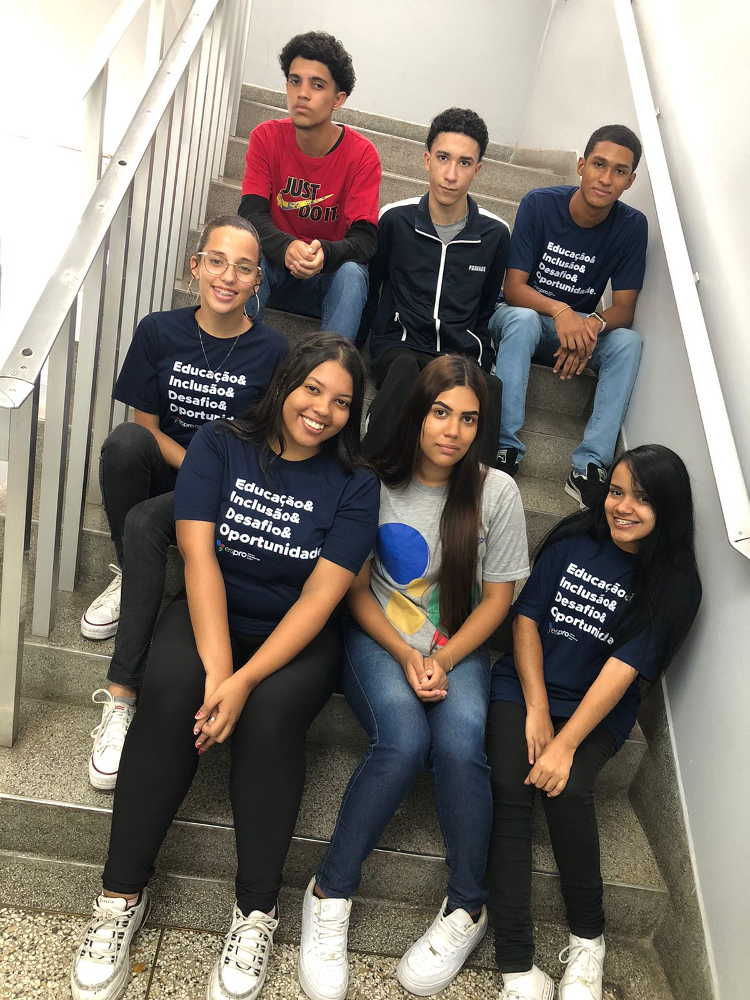

Departamento de RH
“Pedro Henrique, 18 anos, está no espro a 9 meses e ele diz que graças ao ESPRO ele aprendeu e desenvolveu habilidades que são essenciais para sua carreira”
“Stefany, 18 anos, está no espeto a 7 meses e se sente motivada a ir no ESPRO pois acredita e tem a certeza que está construindo um futuro melhor.”
Departamento de T.I
“Maria Eduarda, 18 anos, está na ESPRO a 8 meses, e nesse meio tempo conheceu pessoas incríveis, principalmente do setor que faz parte no projeto gestores do futuro,
que é o T.I, e teve a oportunidade de aprender mais sobre o mundo corporativo e abranger sua visão sobre o mercado de trabalho.”
“Lucas coelho, 18 anos, está na ESPRO a 10 meses, neste período encontrou novas amizades incríveis, desenvolveu sua habilidade de comunicação
e aprendeu cada vez mais
sobre o mundo corporativo em seu dia a dia.”

Departamento de Finanças
“ Rafaela, 17 anos, está no ESPRO a 9 meses e nesse meio tempo aprendeu muitas habilidades
técnicas e pessoais, entre elas a comunicação pois acredita que é a parte mais desafiadora.”
“Gabriela, 18 anos, está há 2 meses na ESPRO nesse período adquiriu experiência no projeto de turma
gestores do futuro e lhe deu autonomia nesse projeto e respeito entre os colegas de classe.”

Departamento de Marketing
“Layane, 18 anos, está na ESPRO há 1 ano e acredita que é algo desafiador porque ela acredita que se desafia todos os dias na espro com a expectativa de ser cada dia melhor.”
“Emily, 17 anos, está na ESPRO a 1 mês e nesse tempo já percebeu que a espro é algo inclusivo pois vê que é um lugar onde todos tem a oportunidade de crescer juntos.”

Departamento de Comunicação e Eventos
“ Isabella Vitorino, jovem de 19 anos, está na ESPRO há 10 meses, ela relata que a espro ela conseguiu desenvolver sua habilidade de comunicação.”
“Matheus Cândido, de 19 anos, está na ESPRO apenas há um mês. Ele relata que a espro auxiliou bastante em melhorar sua comunicação e mostrou a importância da disciplina e do foco para o mercado de trabalho.”
Trabalho completo - ESPRO Que Eu Vejo
O ESPRO
Com o espro a gente aprende Ele nos surpreende Ele nos mostra o caminho a percorrer E nós incentiva a crescer. A nunca perder a esperança Sempre nos mostrando como ter perseverança O espro me ensinou a crescer, a aprender, e a me responsabilizar por cada ato que eu tomar. Com isso, aprendi lições da vida, que um dia vou utilizar. Jovem aprendiz, pronto para crescer, Na jornada da vida, desejo vencer. No mundo cheio de perigo, um mero Jovem Aprendiz se inicia em um importante caminho.